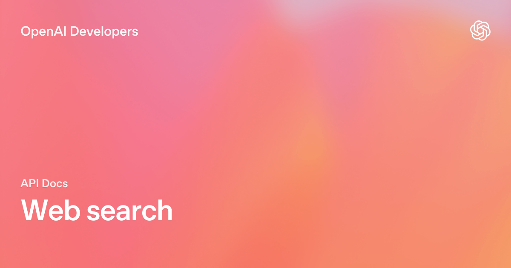

MGT 409 · Lecture 3 · Tauhid Zaman
The model can request a function. Your code decides whether it runs.
Instructor outline — remove before class.
| Clock | Beat | Say this |
|---|---|---|
| 0:00–3:00 | Fluent ≠ live | Chat has a cutoff. No CRM, no this-morning web, no FiftyFlowers.com unless you expose a function. |
| 3:00–10:00 | Handshake | Function calling: the model writes JSON (“please run search_web”). Your Python executes, logs, and caps. |
| 10:00–18:00 | HW2 wrench | Homework 2 Problem 3 is live search. Pipeline: ICP → queries → hits with real URLs. Today = search only. No send-email. |
| 18:00–26:00 | Contract + schema | Name, description, parameters, truncated returns. After the tool: Lecture 2 still applies — evidence in, JSON out. |
| 26:00–33:00 | Cost + permissions | Snippets are a second invoice. Read-only search. AISI: models misuse tools when they can act. |
| 33:00–38:00 | Grade a tool | Click the URL. Trace the query to the ICP. Empty hits → empty list, not a fictional florist. |
| 38:00–40:00 | Handoff | Petal Depot vibe (40 min). Skip MCP and agent loops — those are later lectures. |
Spoken lecture ≈ 40 min. Do not linger on vendor docs. Vibe is where they wire search_web.
Tools turn language into actions you can log, cap, and audit.
Function calling: you declare functions. The model returns JSON that says “please run this.” Your code runs it. Results go back into context.
The model never “uses the internet.” It writes a request. You are the execution layer.
Vendors ship the model. You ship execution, secrets, rate limits, and what happens if search returns garbage.

{"type": "web_search"}
OpenAI · 2026 · citations, domain filters. Function calling is the same handshake with a tool you wrote.
HW2 Problem 3: read ICP JSON → LLM invents ≥5 queries → run each through a real search API → save title, url, snippet.
Do not invent URLs. If the tool did not return an HTTPS link, it is not a lead. Graders click links.
HW2 is an outreach system. Today we only build the search step.
| Field | Do this | If you don’t |
|---|---|---|
name | search_web | The model invents a name you never implemented |
description | When to use it vs other tools | It searches when it should just read JSON |
parameters | JSON Schema, required fields | Garbage args, silent retries, surprise spend |
| return value | Structured hits + URLs, truncated | Raw HTML dumped into tokens |
A vague description (“helps with things”) is how you get surprise tool calls.
Lecture 2 still applies. Evidence in. Shape out.
Separate gathering (tools) from judging (later scripts). Mixing them is how invented URLs sneak in.
web_search bills per query on top of tokens. Five queries is homework. Five hundred unsupervised queries is a budget problem.McKinsey State of AI (Nov 2025); State of AI Trust 2026.
Cap max_results. Portkey will meter the rest either way.
Homework 2 gets read-only search. No send_email. Cited contacts. Humans hit send.
Static extraction (Lecture 2). Data already in SQL. Latency SLA under 2s. Legal “no external web.”
Working URL on every fact. Trace shows queries that match the ICP. Abstains when search is empty.
Build search_web. Make the model propose queries. Save real URLs. Then let the model request the tool.
Toy wholesaler in class — the pattern for FiftyFlowers, not the homework answers.
Next lecture: put today’s tool inside a loop with a stop condition. That is an agent. Still no send-email button.
Swipe or use buttons to advance � projector icon for presentation